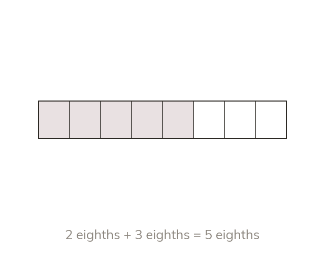

Only equal parts combine
Only fractions with same-size parts can be added or subtracted. Combine the numerators and keep the denominator.
Fractions can be added or subtracted only when their parts are the same size. The numerators are combined and the denominator stays, because it names the size of the parts.